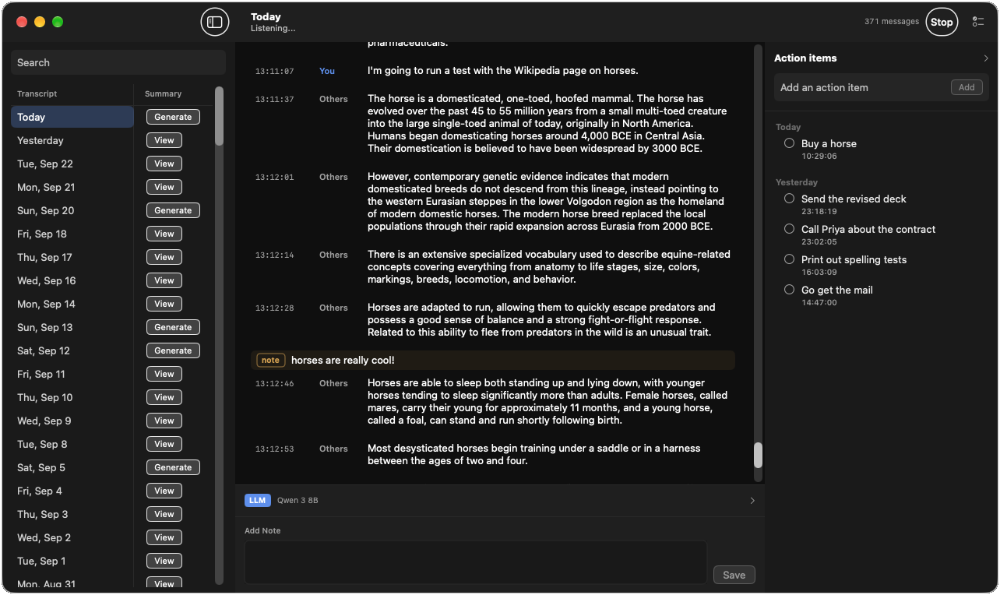

Both sides of a call
Listens to you and, with permission, to the other person. Each line is labeled You or Others. On speakers, call audio is taken out of the microphone so the other person is not written down twice.
Apple Silicon · macOS 14 or later
Stenojot listens on your Mac and writes both sides of a conversation. Notes sit in the transcript. A language model on the same machine pulls action items, summarizes the day, and answers questions about what was said.

Listens to you and, with permission, to the other person. Each line is labeled You or Others. On speakers, call audio is taken out of the microphone so the other person is not written down twice.
Click the gap between lines, or type a longer note at the bottom of the window. Notes stay with the text they belong to, and they copy with the stretch you select.
Find-and-replace rules rewrite each new line before it is saved. Matching is by whole word and ignores case. The same rules can be applied to transcripts already on disk.
Ask about the full day, or about a stretch of lines. The model sees who said what, and any notes in that stretch. The reply streams in and is saved on the transcript.
After a short pause, the model reads the latest stretch and adds concrete tasks. Add, check off, and delete items yourself. The list still works if no model is downloaded.
Generate a summary from the day’s conversations. Notes are included when they add something, and action items are appended. Edit the result, or regenerate it.
Transcripts, notes, action items, and summaries live in Application Support. Start empty, or import a database you already have.
Parakeet turns speech into text. A language model you choose, from a small one that fits an 8 GB Mac to a larger one for a full day, stays in the app’s folder after you quit.
Questions, action items, and daily summaries run on the machine. Closing the window leaves listening on. Quitting stops it.
Unzip it and move Stenojot to Applications. The first time you open it, Control-click the app and choose Open, then Open again. macOS does not recognize this copy’s signature, so a normal double-click stays blocked until you do that.
The zip does not include the transcription packages or the model weights. Those download on first launch.